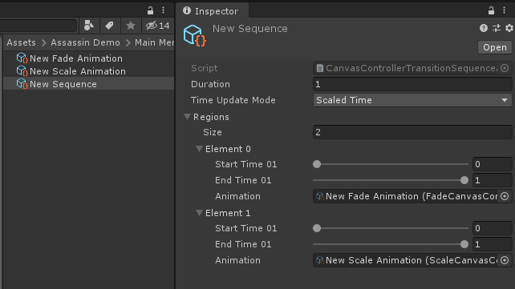
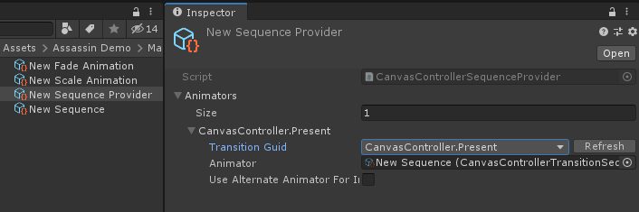
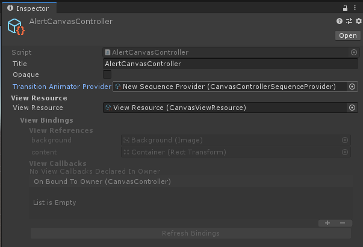
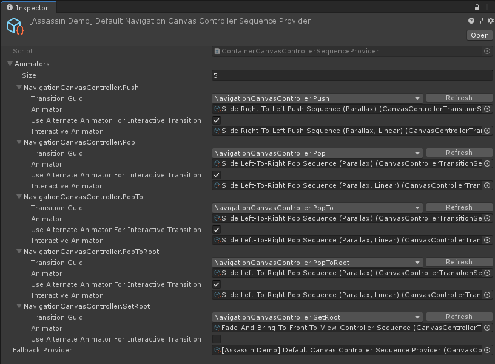

Transition Sequence Animator
Introduction
The Transition Sequence Animator allows you to easily create and customize view controller transition animations.
- Create a transition sequence by adding one or more animations to it, such as Scale, Slide, Fade, and Rotate.
- Tweak the timing of each animation in the sequence to achieve the desired transition effect.
- Easily script your own animations to use with the sequence animator.
- All standard animations support interactivity – that is being driven manually, such as from a swipe position.
This guide covers how to customize the transition animations between view controllers using the Transition Sequence Animator.
Architecture
The Transition Sequence Animator consists of the following components.
- Animation(s) – An Animation is responsible for performing a single animation, such as Scale, Slide, or Fade. One or more Animations are added to a Sequence.
- Sequence – A Sequence is a collection of Animation(s) and is responsible for animating the final transition by driving its Animations. In View Controller terms it is the animator. A Sequence is provided to the View Controller system by a Sequence Provider when an animated transition is to be performed.
- Sequence Provider – A Sequence Provider is an object that provides Sequences to the View Controller system when an animated transition is to be performed. In View Controller terms it is the animator provider. The Sequence Provider can return different Sequences depending upon the transition type, such Present, Push, Dismiss, Pop etc. You may create a Sequence Provider to configure the transition animation of individual view controllers, or add your Sequences to the default providers to affect all view controllers.
Creating A New Transition Sequence (UI Canvas Workflow)
Create A Sequence
To create a new transition sequence for a view controller, begin by creating a new Sequence. This can be done by selecting Create/UI Graph/UI Canvas/Transition Sequence Animator/Sequence from the menu. This sequence will hold the transition's animations.
Create Animations
Next, we need to create the sequence's animations themselves. In this guide, we will create a scale-and-fade transition, whereby the to view controller is scaled up and faded in. Therefore, we need a Scale animation and a Fade animation. To create these, select Create/UI Graph/UI Canvas/Transition Sequence Animator/Scale Animation and Create/UI Graph/UI Canvas/Transition Sequence Animator/Fade Animation from the menu.
Note
In a view controller transition, the ToViewController refers to the view controller being transitioned to. In addition, transitions also include a FromViewController, which is the view controller being transitioned from, and an OwnerViewController, which is the view controller whom owns the transition. For example, in a navigation controller's PushTransition, the to view controller is the view controller being pushed, the from view controller is the view controller currently on screen that will be hidden by the transition, and the owner view controller is the navigation controller itself.
The animation objects can be configured in the inspector. See each animation's documentation for more details. For now, we can leave the default values.
Note
UI Graph includes Scale, Slide, Fade, Rotate, Set-Visibility, and Bring-To-Front animations by default. In addition, you may script your own custom animations to use with the sequence animator.
Add Animations to the Sequence
Now, we can add the newly created animation objects to the sequence. To do this, select the sequence object, add two regions in the inspector to hold the animations, and drop the animation objects onto the regions' respective animation fields. Configure the timing of each animation by adjusting its start and end times. In the image below the sequence has been configured to perform the scale and fade animations together over the whole sequence (from 0 to 1).

A custom transition sequence configured with a scale animation and a fade animation, both running from start to finish (0 – 1).
Provide the Sequence via A Sequence Provider
Our custom transition sequence is now ready to use. The last step is to provide the sequence to the View Controller system for the appropriate transition, which is done via a Sequence Provider. In this guide, we will use our sequence for the canvas controller's PresentTransition.
Apply To All View Controllers
To use our custom transition sequence on all view controllers, we can use the existing Default Canvas Controller Sequence Provider. To do this, select the Default Canvas Controller Sequence Provider, located at UI Graph/Project Settings (User)/Transition Settings/UICanvas/Default Canvas Controller Sequence Provider, find the CanvasController.Present transition entry, and drop our transition sequence object onto its animator field. The custom transition sequence will now be used by all view controllers that use the default sequence provider.
Apply To Select View Controllers
To use our custom transition sequence on select view controllers, we can create a new Sequence Provider. To create a new sequence provider, select Create/UI Graph/UI Canvas/Transition Sequence Animator/Sequence Provider from the menu. Select the newly created provider object, add an animator to it in the inspector, select the desired transition from the list (in this case CanvasController.Present), and drop our custom sequence onto the animator field.

A custom sequence provider, that provides our custom transition sequence for the CanvasController.Present transition.
Note
If you plan to use your sequence with a Container View Controller, see Sequence Providers For Container View Controllers below.
Now to use this provider, select the desired view controller asset with which you wish to use the transition and drop the sequence provider asset onto its transitionAnimatorProvider field in the inspector. The custom transition sequence will now be used by this view controller when it is presented via Present.

Using our custom sequence provider on the AlertCanvasController. When the AlertCanvasController is presented, our custom sequence provider will now be asked to provide the animator.
Sequence Providers For Container View Controllers
A sequence provider uses the transition identifier to determine which sequence to provide. As such, any transition that a view controller invokes must have a corresponding entry in its sequence provider in order to be animated.
A Container Sequence Provider allows you to specify only a subset of transitions along with a fallback sequence provider. The fallback provider can provide animators for any remaining transitions. This allows you to override only select transitions. For example, the Default Navigation Canvas Controller Sequence Provider provides animators for its transitions only (Push, Pop, SetRoot etc.). It then specifies the Default Canvas Controller Sequence Provider as its fallback provider, which provides animators for the Present and Dismiss transitions.
To create a Container Sequence Provider, select Create/UI Graph/UI Canvas/Transition Sequence Animator/Container Sequence Provider from the menu.
A Container Sequence Provider's fallback provider may be another container sequence provider.

The Default Navigation Canvas Controller Sequence Provider.